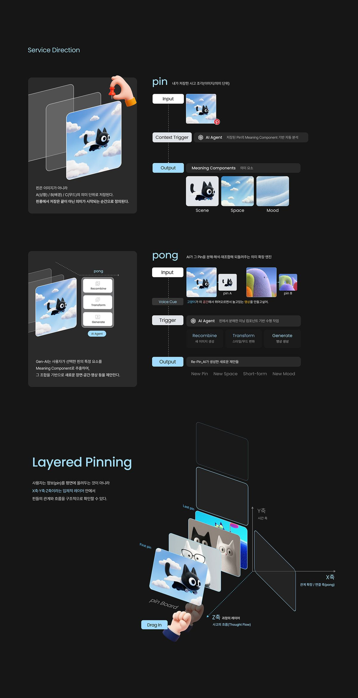
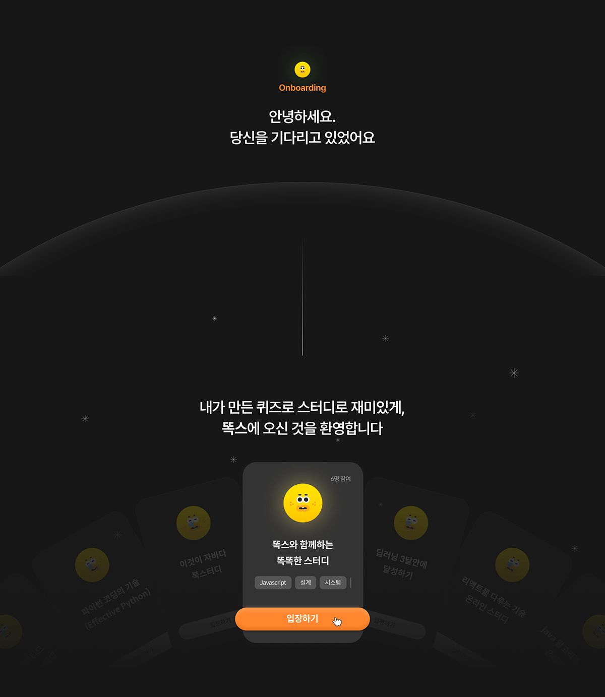
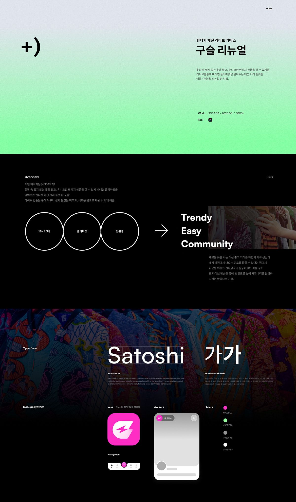

Reference
쇼잉 레퍼런스
5개의 레퍼런스 이미지를 순서대로 확인합니다.
scroll

01 / 05
Service Direction — Pin & Pong, Layered Pinning
02 / 05
Toks Quiz Study Service — Competitor Analysis & Positioning Map

03 / 05
Onboarding Screen — 뚝스 퀴즈 스터디 앱

04 / 05
포트폴리오 — 구슬 리뉴얼 UI/UX 케이스 스터디
05 / 05
히어로 구성 — Top-Notch Mechanical Tools 웹사이트
End of References
레퍼런스 검토 완료